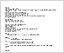

Open Source Software - Developer Connection
If you like open source development, you'll find the most popular
Intranator Open Source libraries here. These projects are maintained
by Intra2net - stable, ready to use and licensed under GPL or LGPL.
Each project provides a description of the software, download links,
a history of the project's releases and mailing lists.
libFTDI |
|
ipt_ACCOUNT |
|
libt2n |
|
|  | Intranator Source Code |